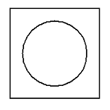
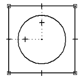
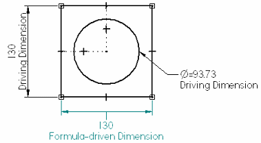
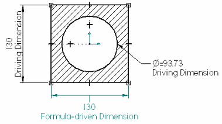
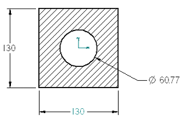

Basic 2D goal seeking workflow
You can use this goal seeking workflow to solve 2D geometry what-if problems. This simple draft example uses a circle and a square. The goal is to find the area of the square given changes in the diameter of the circle.
-
Draw 2D geometry on the 2D Model sheet, working sheet, profile, or synchronous sketch.

-
Add geometric relationships to constrain the 2D elements.

Tip:Geometry that is fully constrained is more predictable. This example shows the minimum number of relationships required for goal seeking to properly manipulate the area of the rectangle. For more information about geometric relationships, such as how to recognize them and how to use them, see Geometric relationships.
-
Add driven and driving dimensions.
-
In the Draft environment, the default color of driving dimensions is black and for driven dimensions it is dark cyan.

-
In profile and sketch mode and on synchronous models, the default color of unlocked (driven) dimensions is blue, and for locked (driving) dimensions it is red.
Tip:-
The manner in which you add dimensions to 2D elements influences the output of the Goal Seek command. For more information, see Best practices in goal seeking.
-
Dimensional variables and values are added automatically to, and are accessible in, the Variable Table.
-
-
In 2D environments, you can use the Area command with the Create Area option to create one or more area objects that consists of closed 2D boundaries from individual geometric elements.
In this example, selecting the area inside the four lines of the square enables goal seeking to update the area instead of just changing the length of a single line.

-
Use the Goal Seek command to evaluate the 2D geometry. When goal seeking, Solid Edge changes the value of a Variable until a specified Target value for a dependent Goal variable is found. The options on the Goal Seek command bar define the Goal, Target, and Variable to change.
Example:For this example, the goal is to calculate a precise area by changing the diameter.
-
The Goal is the variable name of the area object you created in step 4.
-
The Target is the precise area you want to use. In this example, 140000 mm^2.
-
The Variable to change is the diameter of the circle.

The Goal Seek command modifies the diameter of the circle to arrive at the target area value you specified. The dimensioned geometry immediately updates to show the results of the calculation.

For examples of the goal seeking workflow applied to 3D models, see the following help topics:
-